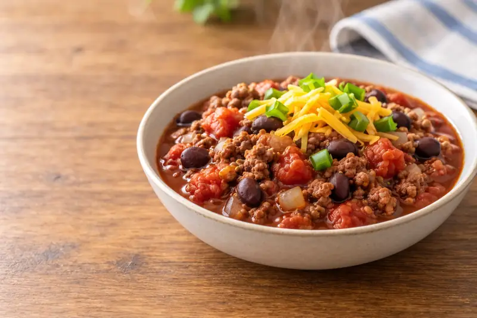
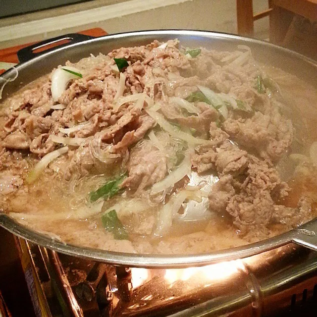
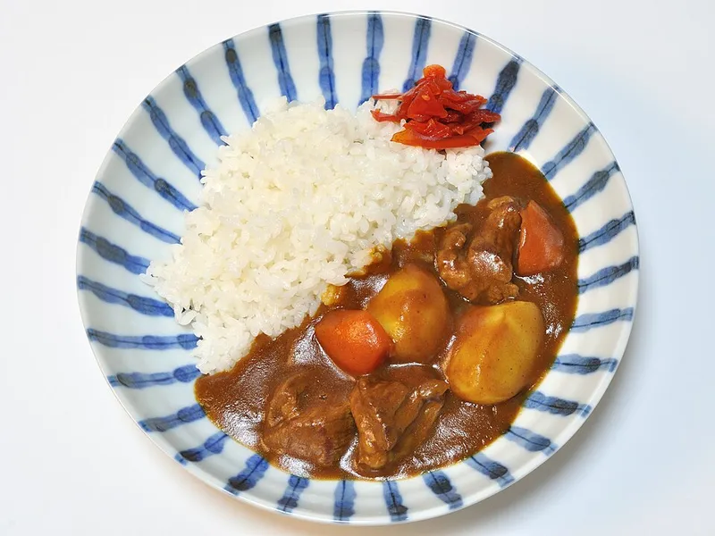

Vegetables蔬菜
Onions洋葱
At Costco在 Costco
Typical pack常见规格: Yellow onions, 4.54 kg黄洋葱，4.54 公斤
Price varies; check the warehouse or costco.ca.价格随时变化，请看仓库或 costco.ca。
Sample date取样日期 2026-11-16. Availability varies by warehouse and season; this is not a stock guarantee.有无因门店和季节而异，不是库存保证。
Store and portion储存与分装
Most vegetables keep 3-7 days bagged in the crisper; wrap leafy greens in paper towel; keep potatoes and onions in a cool dark place, apart from each other.多数蔬菜装袋放冷藏蔬果格 3–7 天；叶菜用纸巾包好；土豆洋葱常温避光，不要放一起。
Wash and cut big packs the day you buy, and freeze or pre-cook what you will not use in a few days.大包装回家当天洗好切好分成几份，当晚用不完的先冷冻或做半成品。
Per 100 g (Canadian Nutrient File)每 100 克（加拿大营养素数据库）
Onion, raw · code 2401
40 kcal · protein蛋白 1.1 g · fat脂肪 0.1 g · carbs碳水 9.34 g · fibre纤维 1.7 g · sodium钠 4 mg
No priority allergen.无重点过敏原。
Recipes with this用到它的菜
 Beef Bourguignon法式红酒炖牛肉225 min分钟 · 4 servings份 · French法
Beef Bourguignon法式红酒炖牛肉225 min分钟 · 4 servings份 · French法
Beef Chili美式牛肉辣豆汤（Chili）75 min分钟 · 6 servings份 · Western西式 Braised Beef Noodle Soup红烧牛肉面140 min分钟 · 4 servings份 · Chinese home-style家常Irish Beef Stew爱尔兰炖牛肉210 min分钟 · 6 servings份 · Western西式
Braised Beef Noodle Soup红烧牛肉面140 min分钟 · 4 servings份 · Chinese home-style家常Irish Beef Stew爱尔兰炖牛肉210 min分钟 · 6 servings份 · Western西式 Black Pepper Beef Stir-fry黑椒牛柳43 min分钟 · 2 servings份 · Cantonese粤
Black Pepper Beef Stir-fry黑椒牛柳43 min分钟 · 2 servings份 · Cantonese粤 Harbin-style Borscht with Beef and Cabbage罗宋汤（哈尔滨红汤）120 min分钟 · 6 servings份 · Northeastern Chinese东北
Harbin-style Borscht with Beef and Cabbage罗宋汤（哈尔滨红汤）120 min分钟 · 6 servings份 · Northeastern Chinese东北
Bulgogi (Korean Marinated Beef)韩式烤牛肉 bulgogi（自制腌料）80 min分钟 · 4 servings份 · Korean韩 Chicken Noodle Soup美式鸡肉蔬菜面汤50 min分钟 · 6 servings份 · Western西式
Chicken Noodle Soup美式鸡肉蔬菜面汤50 min分钟 · 6 servings份 · Western西式 Greek Chicken Souvlaki with Tzatziki希腊柠檬烤鸡串配酸奶黄瓜酱65 min分钟 · 4 servings份 · Greek / Mediterranean希腊/地中海New England Clam Chowder新英格兰蛤蜊汤60 min分钟 · 4 servings份 · Western西式Coq au Vin红酒炖鸡155 min分钟 · 4 servings份 · French法Cumin Beef孜然牛肉25 min分钟 · 2 servings份 · Northwestern / Xinjiang西北/新疆
Greek Chicken Souvlaki with Tzatziki希腊柠檬烤鸡串配酸奶黄瓜酱65 min分钟 · 4 servings份 · Greek / Mediterranean希腊/地中海New England Clam Chowder新英格兰蛤蜊汤60 min分钟 · 4 servings份 · Western西式Coq au Vin红酒炖鸡155 min分钟 · 4 servings份 · French法Cumin Beef孜然牛肉25 min分钟 · 2 servings份 · Northwestern / Xinjiang西北/新疆 Cumin Lamb Stir-fry孜然羊肉23 min分钟 · 2 servings份 · Chinese home-style家常Xinjiang Big Plate Chicken大盘鸡90 min分钟 · 4 servings份 · Northwestern / Xinjiang西北/新疆Dakgalbi春川辣炒鸡45 min分钟 · 4 servings份 · Korean韩
Cumin Lamb Stir-fry孜然羊肉23 min分钟 · 2 servings份 · Chinese home-style家常Xinjiang Big Plate Chicken大盘鸡90 min分钟 · 4 servings份 · Northwestern / Xinjiang西北/新疆Dakgalbi春川辣炒鸡45 min分钟 · 4 servings份 · Korean韩 Korean Braised Tofu (Dubu Jorim)韩式酱烧豆腐20 min分钟 · 3 servings份 · Korean韩Fish Tacos炸鱼塔可40 min分钟 · 4 servings份 · Western西式Soy Sauce Fried Noodles豉油皇炒面22 min分钟 · 2 servings份 · Cantonese粤
Korean Braised Tofu (Dubu Jorim)韩式酱烧豆腐20 min分钟 · 3 servings份 · Korean韩Fish Tacos炸鱼塔可40 min分钟 · 4 servings份 · Western西式Soy Sauce Fried Noodles豉油皇炒面22 min分钟 · 2 servings份 · Cantonese粤 Greek Roast Leg of Lamb with Lemon Potatoes希腊烤羊腿185 min分钟 · 6 servings份 · Greek / Mediterranean希腊/地中海Greek Salad希腊沙拉20 min分钟 · 4 servings份 · Greek / Mediterranean希腊/地中海
Greek Roast Leg of Lamb with Lemon Potatoes希腊烤羊腿185 min分钟 · 6 servings份 · Greek / Mediterranean希腊/地中海Greek Salad希腊沙拉20 min分钟 · 4 servings份 · Greek / Mediterranean希腊/地中海 Japanese Beef Bowl (Gyudon)日式牛丼25 min分钟 · 3 servings份 · Japanese日
Japanese Beef Bowl (Gyudon)日式牛丼25 min分钟 · 3 servings份 · Japanese日
Japanese Chicken Curry日式咖喱鸡90 min分钟 · 4 servings份 · Japanese日Japchae韩式杂菜45 min分钟 · 2 servings份 · Korean韩 Korean Spicy Stir-fried Pork (Jeyuk Bokkeum)韩式辣炒猪肉25 min分钟 · 3 servings份 · Korean韩Kimchi Fried Rice泡菜炒饭20 min分钟 · 2 servings份 · Korean韩
Korean Spicy Stir-fried Pork (Jeyuk Bokkeum)韩式辣炒猪肉25 min分钟 · 3 servings份 · Korean韩Kimchi Fried Rice泡菜炒饭20 min分钟 · 2 servings份 · Korean韩 Kimchi and Tofu Stew (Kimchi-jjigae)泡菜豆腐汤（kimchi-jjigae）45 min分钟 · 2 servings份 · Korean韩
Kimchi and Tofu Stew (Kimchi-jjigae)泡菜豆腐汤（kimchi-jjigae）45 min分钟 · 2 servings份 · Korean韩 Lamb and Carrot Dumplings羊肉胡萝卜水饺85 min分钟 · 5 servings份 · Northeastern Chinese东北Xinjiang Lamb Pilaf新疆手抓饭140 min分钟 · 4 servings份 · Northwestern / Xinjiang西北/新疆Braised Lamb Shanks红焖羊腿140 min分钟 · 4 servings份 · Chinese home-style家常Oven Lamb Skewers烤箱羊肉串67 min分钟 · 3 servings份 · Chinese home-style家常Classic Lasagna千层面120 min分钟 · 6 servings份 · Italian意Lemon Chicken Orzo柠檬鸡肉米粒面45 min分钟 · 4 servings份 · Greek / Mediterranean希腊/地中海
Lamb and Carrot Dumplings羊肉胡萝卜水饺85 min分钟 · 5 servings份 · Northeastern Chinese东北Xinjiang Lamb Pilaf新疆手抓饭140 min分钟 · 4 servings份 · Northwestern / Xinjiang西北/新疆Braised Lamb Shanks红焖羊腿140 min分钟 · 4 servings份 · Chinese home-style家常Oven Lamb Skewers烤箱羊肉串67 min分钟 · 3 servings份 · Chinese home-style家常Classic Lasagna千层面120 min分钟 · 6 servings份 · Italian意Lemon Chicken Orzo柠檬鸡肉米粒面45 min分钟 · 4 servings份 · Greek / Mediterranean希腊/地中海 Minestrone意式蔬菜汤（Minestrone）55 min分钟 · 6 servings份 · Italian意Moussaka希腊茄子肉酱千层145 min分钟 · 6 servings份 · Greek / Mediterranean希腊/地中海Nikujaga土豆炖肉55 min分钟 · 3 servings份 · Japanese日
Minestrone意式蔬菜汤（Minestrone）55 min分钟 · 6 servings份 · Italian意Moussaka希腊茄子肉酱千层145 min分钟 · 6 servings份 · Greek / Mediterranean希腊/地中海Nikujaga土豆炖肉55 min分钟 · 3 servings份 · Japanese日 Oyakodon (Japanese Chicken and Egg Rice Bowl)亲子丼（日式鸡肉滑蛋盖饭）50 min分钟 · 2 servings份 · Japanese日Black Pepper Beef Rice Bowl黑椒牛肉饭30 min分钟 · 2 servings份 · Chinese home-style家常
Oyakodon (Japanese Chicken and Egg Rice Bowl)亲子丼（日式鸡肉滑蛋盖饭）50 min分钟 · 2 servings份 · Japanese日Black Pepper Beef Rice Bowl黑椒牛肉饭30 min分钟 · 2 servings份 · Chinese home-style家常 Beef and Potato Stew土豆炖牛肉120 min分钟 · 4 servings份 · Northeastern Chinese东北Ratatouille普罗旺斯炖菜80 min分钟 · 4 servings份 · French法Mushroom Risotto蘑菇烩饭45 min分钟 · 4 servings份 · Italian意
Beef and Potato Stew土豆炖牛肉120 min分钟 · 4 servings份 · Northeastern Chinese东北Ratatouille普罗旺斯炖菜80 min分钟 · 4 servings份 · French法Mushroom Risotto蘑菇烩饭45 min分钟 · 4 servings份 · Italian意 Roast Chicken with Root Vegetables烤全鸡（西式，配根茎蔬菜）170 min分钟 · 4 servings份 · Western西式
Roast Chicken with Root Vegetables烤全鸡（西式，配根茎蔬菜）170 min分钟 · 4 servings份 · Western西式 Salmon Chowder三文鱼土豆浓汤45 min分钟 · 6 servings份 · Western西式
Salmon Chowder三文鱼土豆浓汤45 min分钟 · 6 servings份 · Western西式 Shakshuka番茄烩蛋（Shakshuka）35 min分钟 · 3 servings份 · Greek / Mediterranean希腊/地中海Sheet-Pan Sausage and Vegetables香肠烤蔬菜60 min分钟 · 4 servings份 · Western西式Shepherd's Pie牧羊人派105 min分钟 · 6 servings份 · Western西式
Shakshuka番茄烩蛋（Shakshuka）35 min分钟 · 3 servings份 · Greek / Mediterranean希腊/地中海Sheet-Pan Sausage and Vegetables香肠烤蔬菜60 min分钟 · 4 servings份 · Western西式Shepherd's Pie牧羊人派105 min分钟 · 6 servings份 · Western西式 Japanese Ginger Pork (Shogayaki)日式生姜烧猪肉18 min分钟 · 2 servings份 · Japanese日
Japanese Ginger Pork (Shogayaki)日式生姜烧猪肉18 min分钟 · 2 servings份 · Japanese日 Spaghetti with Bolognese Ragu意式番茄肉酱面（博洛尼亚肉酱）175 min分钟 · 4 servings份 · Italian意Taiwanese Beef Noodle Soup台湾红烧牛肉面195 min分钟 · 4 servings份 · Fujian / Taiwanese闽台
Spaghetti with Bolognese Ragu意式番茄肉酱面（博洛尼亚肉酱）175 min分钟 · 4 servings份 · Italian意Taiwanese Beef Noodle Soup台湾红烧牛肉面195 min分钟 · 4 servings份 · Fujian / Taiwanese闽台 Tomato Beef Brisket Soup西红柿牛腩汤140 min分钟 · 4 servings份 · Chinese home-style家常Tteokbokki辣炒年糕30 min分钟 · 2 servings份 · Korean韩Roast Turkey烤火鸡240 min分钟 · 8 servings份 · Western西式Tomato Beef Brisket Noodles番茄牛腩面115 min分钟 · 4 servings份 · Chinese home-style家常
Tomato Beef Brisket Soup西红柿牛腩汤140 min分钟 · 4 servings份 · Chinese home-style家常Tteokbokki辣炒年糕30 min分钟 · 2 servings份 · Korean韩Roast Turkey烤火鸡240 min分钟 · 8 servings份 · Western西式Tomato Beef Brisket Noodles番茄牛腩面115 min分钟 · 4 servings份 · Chinese home-style家常